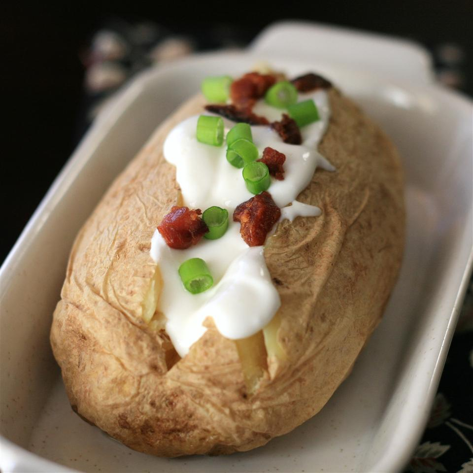

Home
Microwave Baked Potato
If you want the yummy taste of a slowly baked potato but aren't patient enough,
or don't have the know-how to bake it in an oven, this is for you. Give it 12
minutes and get a mouth-watering, taste bud-tingling treat.

Ingredients
- 1 large russet potato
- 1 tablespoon butter or margarine
- 3 tablespoons shredded Cheddar cheese
- salt and pepper to taste
- 3 teaspoons sour cream
Directions
- Instructions Checklist
- Step 1
- Scrub the potato, and prick several time with the tines of a fork. Place on a
plate.
- Step 2
- Cook on full power in the microwave for 5 minutes. Turn over, and continue to
cook for 5 more minutes. When the potato is soft, remove from the microwave,
and cut in half lengthwise. Season with salt and pepper, and mash up the inside
a little using a fork. Top the open sides with butter and 2 tablespoons of cheese.
Return to the microwave, and cook for about 1 minute to melt the cheese.
- Step 3
- Top with remaining cheese and sour cream, and serve.
- Nutrition Facts
- Per Serving: 517 calories; protein 14.2g; carbohydrates 65.4g; fat 23.1g; cholesterol 63.1mg;
sodium 421.6mg.
Next Recipes